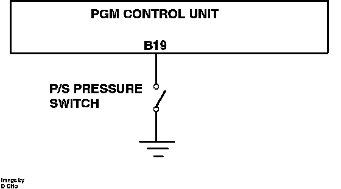

Power Steering Pressure Switch: Description and Operation
Power Steering Pressure Switch Operation:

PURPOSE
The ECM uses the signal to modify injector opening time to compensate for the extra load being placed on the engine at idle.
LOCATION
The power steering switch is threaded into the power steering pressure hose in the rear of the engine compartment.
OPERATION
When the steering wheel is moved at idle speed, the Power Steering switch closes, sending a ground signal to the fuel ECM. On receiving this signal, the ECM increases idle speed to compensate for the additional load from the power steering pump.